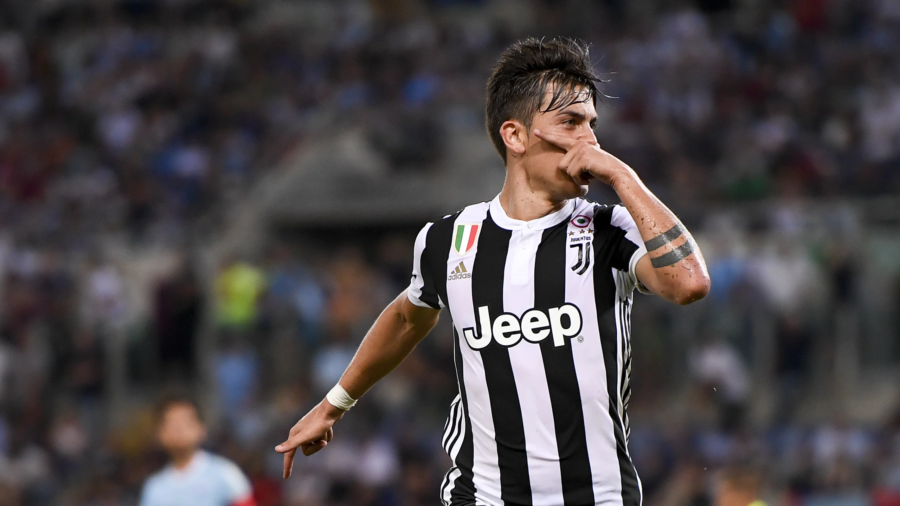
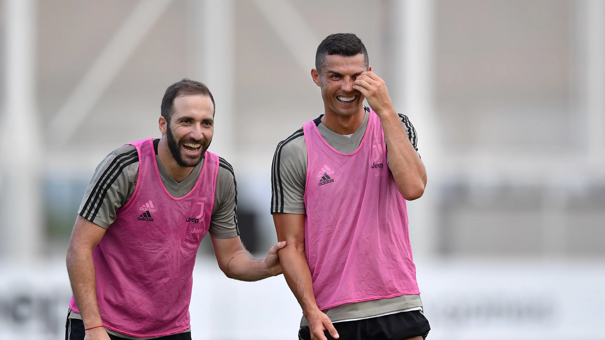
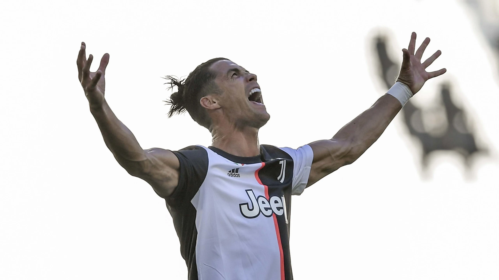

History of JUVENTUS
Seria A Winner!
2017-2018 Season
#MY7H The 2017/18 season saw Juventus claim a fourth consecutive Coppa Italia and seventh straight Scudetto. The number seven is a highly significant one: for the Egyptians, it represented life. The Greeks revered it, Plato called it ‘anima mundi.’ It is a number that cultures of the past, philosophies and religions looked up to as a symbol of perfection. Without wanting to be irreverent or disrespectful, ever since 13 May 2018, for our world – the small world of football – the number seven has a new meaning: Juventus.The seven consecutive titles won were something crazy, but they did not satisfy the hunger for victories and Allegri's team wrote a new, incredible chapter in its history.The 2017/18 season saw Juventus claim a fourth consecutive Coppa Italia and seventh straight Scudetto. The number seven is a highly significant one: for the Egyptians, it represented life. The Greeks revered it, Plato called it ‘anima mundi.’ It is a number that cultures of the past, philosophies and religions looked up to as a symbol of perfection. Without wanting to be irreverent or disrespectful, ever since 13 May 2018, for our world – the small world of football – the number seven has a new meaning: Juventus.The seven consecutive titles won were something crazy, but they did not satisfy the hunger for victories and Allegri's team wrote a new, incredible chapter in its history.The 2017/18 season saw Juventus claim a fourth consecutive Coppa Italia and seventh straight Scudetto. The number seven is a highly significant one: for the Egyptians, it represented life. The Greeks revered it, Plato called it ‘anima mundi.’ It is a number that cultures of the past, philosophies and religions looked up to as a symbol of perfection. Without wanting to be irreverent or disrespectful, ever since 13 May 2018.Back to top
2018-2019 Season
#W8nderfulThe team, already stellar, was further enriched during the summer. Emre Can, Spinazzola, Perin, Cancelo all arrived, Bonucci returned and, most notably, Cristiano Ronaldo, the strongest player in the world was signed by the club. The Bianconeri soon created an unbridgeable gap with the other teams. At the end of September, the points gap in the standings against Napoli, who were in second place, were already six. They soon became 11 at the end of the year, even 20 by the 12th match day of the return and they will soon became 17 when facing Fiorentina, the game that would be decisive in securing the title, which was won with five days in advance, wrapping up yet another wonderful campaign by the Bianconeri. Indeed, to put it in the language of social media, it was #W8NDERFUL.The team, already stellar, was further enriched during the summer. Emre Can, Spinazzola, Perin, Cancelo all arrived, Bonucci returned and, most notably, Cristiano Ronaldo, the strongest player in the world was signed by the club. The Bianconeri soon created an unbridgeable gap with the other teams. At the end of September, the points gap in the standings against Napoli, who were in second place, were already six. They soon became 11 at the end of the year, even 20 by the 12th match day of the return and they will soon became 17 when facing Fiorentina, the game that would be decisive in securing the title, which was won with five days in advance, wrapping up yet another wonderful campaign by the Bianconeri. Indeed, to put it in the language of social media, it was #W8NDERFUL.The team, already stellar, was further enriched during the summer. Emre Can, Spinazzola, Perin, Cancelo all arrived, Bonucci returned and, most notably, Cristiano Ronaldo.Back to top
2019-2020 Season
#STRON9ER Juve rewrites history once again, for the ninth consecutive year. And to do so chooses a different, profound, radical, corageous way: the change of the coach, after years of unforgettable successes, brings Maurizio Sarri to the bench.The new way of approaching matches, more aggressive, in the constant search for ball possession, doesn't change the fate of the league. The rivals change, yes, even during the same season and after Inter it is Lazio who have hopes of undermining the Bianconeri. When the head-to-head is tight and Sarri's team is ahead by only one point, football, the world, must however stop. Covid-19 forces everyone to live surreal days, of forced break, of the desire of seeing one another and the impossibility of doing so. Days of medical bulletins, of positivity or negativity to a virus so far unknown but that has overwhelmingly jumped at the top of any news for weeks.Following the restart, after more than three months, the stadiums are empty and played in an surreal atmosphere. But Juve is stronger even than this and immediately obtains an important lead over its rivals, with a series of consecutive victories that allow them to concede a few missteps but, above all, deliver its ninth consecutive Scudetto, the 38th in its history, two days early. And in the end this is all for fans, who, along with the team, have been stronger than everything. Simply STRON9ER.Juve rewrites history once again, for the ninth consecutive year. And to do so chooses a different, profound, radical, corageous way: the change of the coach, after years of unforgettable successes, brings Maurizio Sarri to the bench.The new way of approaching matches, more aggressive, in the constant search for ball possession, doesn't change the fate of the league. The rivals change, yes, even during the same season and after Inter it is Lazio. Simply STRON9ER.Back to top